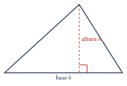
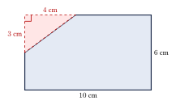
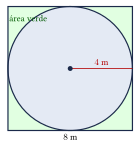
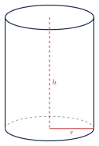
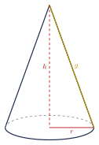
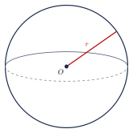
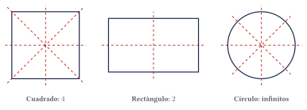

Capítulo 23
Perímetros, áreas y volúmenes
IPN CENEVAL
El perímetro, el área y el volumen permiten medir diferentes características de las figuras geométricas. El perímetro mide la longitud de un contorno, el área mide la extensión de una superficie y el volumen mide el espacio ocupado por un cuerpo tridimensional.
En este capítulo estudiarás las fórmulas de las figuras planas y los sólidos más comunes, el cálculo de áreas compuestas y el concepto de simetría axial.
23.1 Perímetro y área#
El perímetro de una figura plana es la longitud total de su contorno. Para calcularlo, se suman las longitudes de todos sus lados o se utiliza una fórmula equivalente.
El perímetro se expresa en unidades lineales, como:
El área de una figura plana es la medida de la superficie que ocupa.
El área se expresa en unidades cuadradas, como:
El perímetro y el área representan magnitudes diferentes. Dos figuras pueden tener el mismo perímetro y áreas distintas, o la misma área y perímetros diferentes.
También deben distinguirse sus unidades:
representa una longitud, mientras que:
representa una superficie.
23.2 Triángulo#
Si un triángulo tiene lados de longitudes \(a\), \(b\) y \(c\), su perímetro es:
Si se toma un lado como base \(b\) y la altura perpendicular correspondiente es \(h\), su área es:

La altura debe ser perpendicular a la recta que contiene la base. En un triángulo obtusángulo, la altura correspondiente a ciertas bases puede quedar fuera del triángulo.
Encuentra el área de un triángulo cuya base mide \(8\ \text{cm}\) y cuya altura mide \(5\ \text{cm}\).
Ver solución
Aplicamos la fórmula:
El área es:
23.3 Cuadrado y rectángulo#
Si un cuadrado tiene lado de longitud \(l\), entonces:
y:
Si un rectángulo tiene base \(b\) y altura \(h\), entonces:
y:
Encuentra el perímetro y el área de un rectángulo cuyos lados miden:
Ver solución
Calculamos el perímetro:
Calculamos el área:
Por tanto:
y:
23.4 Paralelogramo, rombo y trapecio#
Si un paralelogramo tiene lados de longitudes \(a\) y \(b\), su perímetro es:
Si se toma como base el lado de longitud \(b\) y la altura perpendicular correspondiente es \(h\), su área es:
Si un rombo tiene lado de longitud \(l\), su perímetro es:
Si sus diagonales tienen longitudes \(D\) y \(d\), su área es:
Si un trapecio tiene lados de longitudes \(a\), \(b\), \(c\) y \(d\), su perímetro es:
Si sus bases paralelas tienen longitudes \(B\) y \(b\), y la distancia perpendicular entre ellas es \(h\), su área es:
La altura de un paralelogramo o de un trapecio no es necesariamente uno de sus lados. La altura es la distancia perpendicular entre las rectas que contienen las bases.
23.5 Círculo y circunferencia#
Si una circunferencia tiene radio \(r\), su longitud es:
Si su diámetro es \(d=2r\), también puede utilizarse:
El área del círculo correspondiente es:
En este contexto, la palabra perímetro del círculo suele referirse a la longitud de la circunferencia. Sin embargo, la expresión geométricamente más precisa es:
Encuentra el área de un círculo cuyo diámetro mide:
Ver solución
El radio es la mitad del diámetro:
Aplicamos la fórmula:
Utilizando \(\pi\approx3.1416\):
23.6 Resumen de áreas de figuras planas#
Las fórmulas principales son:
- Triángulo \[A=\frac{bh}{2}.\]
- Cuadrado \[A=l^2.\]
- Rectángulo \[A=bh.\]
- Paralelogramo \[A=bh.\]
- Rombo \[A=\frac{Dd}{2}.\]
- Trapecio \[A=\frac{(B+b)h}{2}.\]
- Círculo \[A=\pi r^2.\]
23.7 Figuras compuestas#
Una figura compuesta es una figura que puede descomponerse en figuras geométricas más sencillas.
Su área puede calcularse mediante alguno de los siguientes procedimientos:
- sumar las áreas de las regiones que la forman;
- restar de una figura mayor las áreas de las regiones eliminadas;
- dividir la figura de diferentes maneras y comprobar que los procedimientos produzcan el mismo resultado.
Si una figura se divide en regiones interiores que no se superponen, su área total es la suma de las áreas de dichas regiones:
Si una región se elimina de una figura mayor, el área restante es:
Un rectángulo de \(10\ \text{cm}\) por \(6\ \text{cm}\) tiene un recorte triangular en una esquina. El triángulo recortado tiene una base de \(4\ \text{cm}\) y una altura de \(3\ \text{cm}\). Encuentra el área de la figura restante.
Ver solución
La situación puede representarse de la siguiente manera:

Calculamos el área del rectángulo:
Calculamos el área del triángulo recortado:
Restamos:
Un jardín tiene forma de cuadrado de \(8\ \text{m}\) de lado. En su interior hay una fuente circular inscrita de radio \(4\ \text{m}\). Encuentra el área verde que queda fuera de la fuente.
Ver solución
La situación se representa mediante un círculo inscrito en un cuadrado:

Calculamos el área del jardín:
Calculamos el área de la fuente:
El área verde es:
Aproximadamente:
23.8 Volumen#
El volumen de un sólido es la medida del espacio tridimensional que ocupa.
El volumen se expresa en unidades cúbicas, como:
Si todas las longitudes de una figura tridimensional se multiplican por un factor \(k\), su volumen se multiplica por:
Por ejemplo, si todas las dimensiones se duplican, el volumen se multiplica por:
23.9 Prismas#
Un prisma es un sólido que tiene dos bases congruentes y paralelas. Sus caras laterales son paralelogramos.
Si \(A_b\) es el área de una base y \(h\) es la altura perpendicular entre las bases, entonces:
Si un cubo tiene arista de longitud \(a\), su volumen es:
El área total de sus seis caras es:
Si un prisma rectangular tiene longitud \(a\), anchura \(b\) y altura \(c\), su volumen es:
Su área total es:
Encuentra el volumen de un cubo cuya arista mide:
Ver solución
Aplicamos la fórmula:
El volumen es:
23.10 Cilindro#
Un cilindro circular recto tiene dos bases circulares congruentes y paralelas. Su altura \(h\) es la distancia perpendicular entre las bases.
Si el cilindro tiene radio \(r\) y altura \(h\), su volumen es:
Su área lateral es:
Su área total es:

Encuentra el volumen de un cilindro de radio \(3\ \text{cm}\) y altura \(10\ \text{cm}\).
Ver solución
Aplicamos la fórmula:
Aproximadamente:
23.11 Pirámide y cono#
Si una pirámide tiene una base de área \(A_b\) y altura perpendicular \(h\), su volumen es:
Si un cono circular recto tiene radio \(r\) y altura \(h\), su volumen es:
Si \(g\) es la generatriz del cono, su área lateral es:
Su área total es:
La altura \(h\) del cono es perpendicular a la base. La generatriz \(g\) es el segmento inclinado que une el vértice con un punto de la circunferencia de la base.
En un cono circular recto:

Encuentra el volumen de un cono de radio \(5\ \text{cm}\) y altura \(12\ \text{cm}\).
Ver solución
Aplicamos la fórmula:
Aproximadamente:
23.12 Esfera#
Si una esfera tiene radio \(r\), su volumen es:
El área de su superficie es:

Encuentra el volumen de una esfera de radio:
Ver solución
Aplicamos la fórmula:
Aproximadamente:
23.13 Resumen de volúmenes#
Las fórmulas principales son:
- Prisma \[V=A_bh.\]
- Cubo \[V=a^3.\]
- Prisma rectangular \[V=abc.\]
- Cilindro \[V=\pi r^2h.\]
- Pirámide \[V=\frac{A_bh}{3}.\]
- Cono \[V=\frac{\pi r^2h}{3}.\]
- Esfera \[V=\frac{4}{3}\pi r^3.\]
23.14 Simetría axial#
CENEVAL
Una figura tiene simetría axial si existe una recta que la divide en dos partes que son imágenes especulares.
La recta recibe el nombre de eje de simetría. Si la figura se dobla sobre este eje, ambas partes coinciden.
Las siguientes figuras tienen los números de ejes de simetría indicados:
- triángulo equilátero: \[3;\]
- cuadrado: \[4;\]
- rectángulo no cuadrado: \[2;\]
- rombo no cuadrado: \[2;\]
- pentágono regular: \[5;\]
- hexágono regular: \[6;\]
- polígono regular de \(n\) lados: \[n;\]
- círculo: \[\text{infinitos}.\]
La precisión “no cuadrado” es importante. Un cuadrado también es un rectángulo y un rombo, pero tiene cuatro ejes de simetría, no dos.
Las siguientes figuras muestran algunos ejemplos:

¿Cuántos ejes de simetría tiene un triángulo equilátero?
Ver solución
Un triángulo equilátero tiene tres ejes de simetría. Cada eje pasa por:
- uno de sus vértices;
- el punto medio del lado opuesto.
Por tanto, el número de ejes es:
23.15 Ejercicios propuestos#
Encuentra el área de un triángulo cuya base mide:
y cuya altura mide:
Ver solución
Encuentra el perímetro y el área de un cuadrado cuyo lado mide:
Ver solución
Encuentra el área de un círculo de radio:
Ver solución
Encuentra el área de un trapecio cuyas bases miden:
y cuya altura mide:
Ver solución
Encuentra el volumen de un cubo cuya arista mide:
Ver solución
Encuentra el volumen de un cilindro de radio:
y altura:
Ver solución
Encuentra el volumen de una esfera de radio:
Ver solución
Encuentra el volumen de un cono de radio:
y altura:
Ver solución
Un cuadrado de lado \(10\ \text{cm}\) contiene un círculo inscrito de radio \(5\ \text{cm}\). Encuentra el área de la región comprendida entre el cuadrado y el círculo.
Ver solución
\[A_{\text{cuadrado}} = 100 \text{ cm}^2, \qquad A_{\text{círculo}} = 25\pi \approx 78.54 \text{ cm}^2.\] \[A_{\text{región}} = 100 - 25\pi \approx 21.46 \text{ cm}^2.\]
¿Cuántos ejes de simetría tiene un hexágono regular?
Ver solución
El hexágono regular tiene 6 ejes de simetría.
¿Cuántos ejes de simetría tiene un rectángulo que no es un cuadrado?
Ver solución
El rectángulo tiene 2 ejes de simetría (las rectas que pasan por los puntos medios de los lados opuestos).